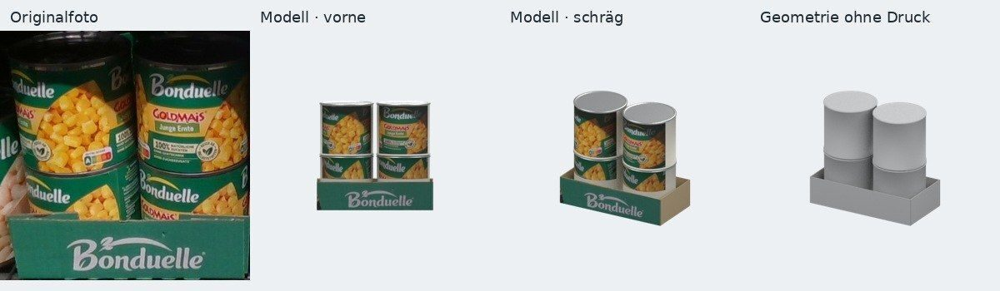

Shelf scanning & availability
Our robot cell scans aisles for gaps, misplacements and pricing errors, so out-of-stocks get caught and fixed — without adding staff hours.
Retail robotics · Berlin
Autus Robotics builds robot cells that scan and restock retail shelves — and perception software that turns a single shelf photo into a live 3-D planogram digital twin. Proven on real hardware, piloted in three weeks.
📍 Berlin, Germany 🤖 Built on Universal Robots hardware ⏱ Pilot in 3 weeks

What we do
We solve a physical, measurable problem — on-shelf availability — and back it with a perception pipeline that most “AI” vendors don’t have.
Our robot cell scans aisles for gaps, misplacements and pricing errors, so out-of-stocks get caught and fixed — without adding staff hours.
The same cell can pick and restock. We build on standard, proven robots (e.g. Universal Robots) with our own perception and control software.
Our perception software turns an ordinary shelf photo into a textured 3-D product/tray model — a live planogram digital twin your team can act on.
How it works
One loop, three steps — insight to action.
Start with a single in-store photo of a shelf or product tray. No special rig, no store downtime.
Our pipeline reconstructs a textured 3-D model and clean geometry — a planogram twin of what’s really on the shelf.
The same model drives a robot cell that scans for gaps and restocks — closing the loop from insight to action.
Proof
The image below is a real result from our pipeline — a Bonduelle Goldmais can-tray photographed in a store, reconstructed into a textured 3-D model and clean geometry.
No scanning rig or store closure — a single in-store photo is enough to reconstruct the tray in 3-D.
A working retail robot cell and a photo→twin pipeline is a scarce combination — most vendors have neither.
We build a twin of one of your own aisles in a short, fixed-fee pilot before any large commitment.
By the numbers
Technology & approach
We pair standard, reliable robot hardware with perception and control software we build in-house — and we prove value in a fixed-fee pilot before you commit.
We show partner or technology logos only where we have permission to use them; otherwise capabilities are listed as text.
Tell us about your aisles or line. We’ll set up a short, fixed-fee pilot with a clear success measure agreed up front.
Book a 20-min call